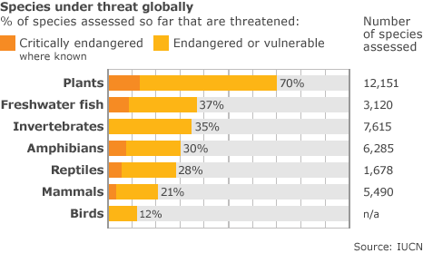

World Overload
Earth
Food Security
Relationships
Safety
Games

Is Loss of Biodiversity real?

According to Salon, "At least 1 million plant and animal species are at risk of extinction." So to answer this question, yes the loss of biodiversity is REAL!
Causes
Habitat destruction is a major cause for biodiversity loss. Habitat loss is caused by deforestation, overpopulation, pollution and global warming. Species which are physically large and those living in forests or oceans are more affected by habitat reduction. We need to act and act now!
What we can do!
Help Native Pollinators. Pollinators, are the key to reproduction for most flowering plants which are foundational to the survival of many species on our planet. Give pollinators an extra boost in your backyard by: reducing or eliminating the use of pesticides, providing nectar sources by planting a variety of wildflowers and native plants that will bloom throughout the season, and more. Look at the internet for more information!
Reduce your consumption. The more we reduce our demand for new resources, the less habitat will be destroyed to get those resources or the energy to make those products, and the less waste goes into the landfill.
Reduce your energy demand. Start by conserving energy in your home. A Home Energy Audit can help raise your awareness about where you can reduce energy use in your home. Then incorporate renewable energy.
Educate yourself! Advocate for Biodiversity. Educate yourself about the importance of biodiversity and be able to answer the questions, “Why does it matter so much?” and “Why should we make sacrifices to protect it?”
Or else...
Biodiversity provides our food, cleans our water , provides medicines for curing illness, and even creates the oxygen that we breathe! If most species of both animals and plants end up going extinct, we would be deprived of many helpful resources.